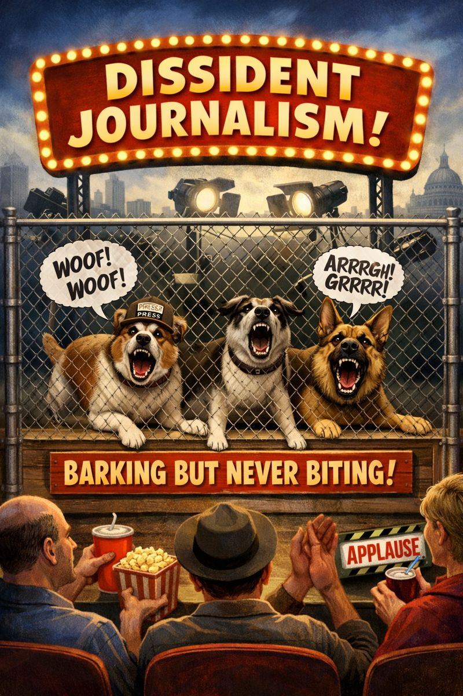

The Hidden Mechanics of Global Media Control: Why Even Independent Outlets Know What Not to Say
Dedicated to all of you who decided not to answer!

Introduction
In a globally networked information environment, the capacity to speak is not equivalent to the capacity to be heard or to impact. Today’s media ecosystem is composed of enormous corporate and state actors, emerging independent voices, and a sprawling infrastructure of digital platforms and social networks that shape what can—or cannot—be discussed.
This article examines how both controlled and “independent” media operate within this network, what guides their editorial boundaries, and why certain topics remain dangerously absent from public discourse.
1. Suprageocomunicacionalidad, Cosmoestadismo, and the Shape of Media Space
Javier Vivas Santana’s concept of suprageocomunicacionalidad frames the global media infrastructure as an emergent horizontal platform—social networks, data flows, and digital communication that pervade everyday life.
2. Media Control Through Structural Capture
A central phenomenon explaining constrained media behavior is media capture...
3. Theories Explaining Editorial Selection: Agenda-Setting and Gatekeeping
Agenda-setting theory suggests that the media don’t tell people what to think, but significantly influence what they think about...
4. Whistleblowers, Risk Assessment, and Strategic Disclosure
The Snowden leaks provide a particularly informative case...
5. Topic Diffusion and the Role of Credibility Signaling
One of the more subtle survival strategies of dissenting media...
6. The Paradox of Independent Media in a Networked System
Independence in theory does not guarantee independence in effect...
7. Implications for Public Discourse and Democratic Deliberation
The net result is a media ecosystem that strongly shapes public perception...
Conclusion
The modern media environment is neither purely free nor wholly controlled...
Why Autopsia della democrazia rappresentativa Is Avoided: The Extension
More precisely:
1. What makes a topic “radioactive” for media
Media do not primarily avoid topics that are morally shocking...
2. Why the thesis is worse than “anti-democratic”
Media are comfortable with “democracy is in crisis”...
3. Why dissident media are not an exception
Dissident media survive by opposing actors...
4. Why Snowden was publishable — and Autopsia is not
Snowden threatened people in power. Autopsia threatens the category of power itself.
5. The clearest indicator: how it will be avoided
You will notice very specific avoidance patterns...
6. Final assessment
That is not censorship. That is systemic immune response.